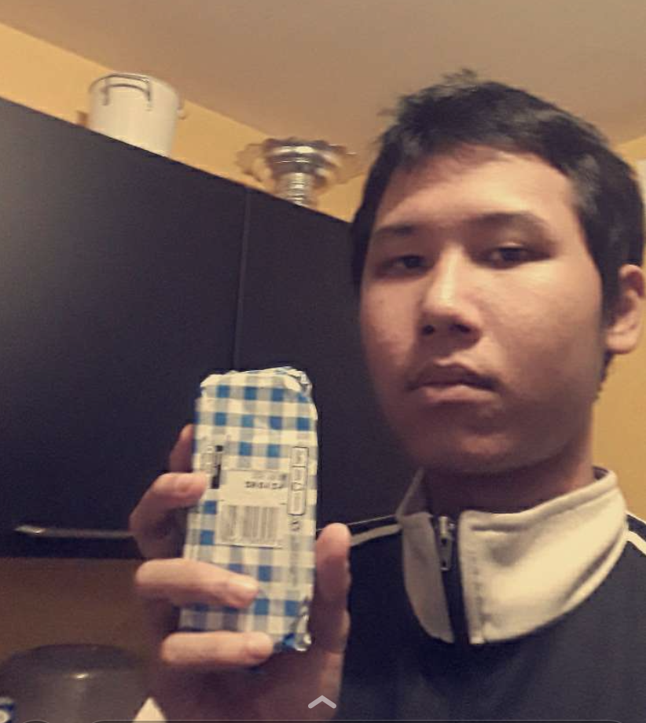
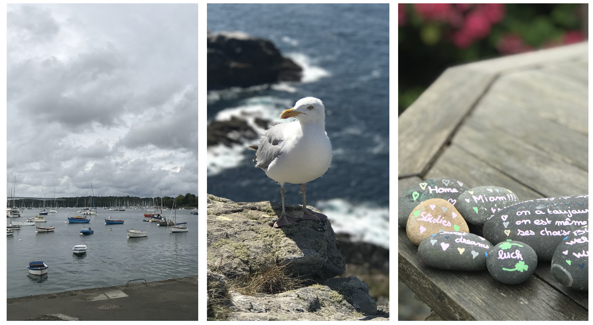
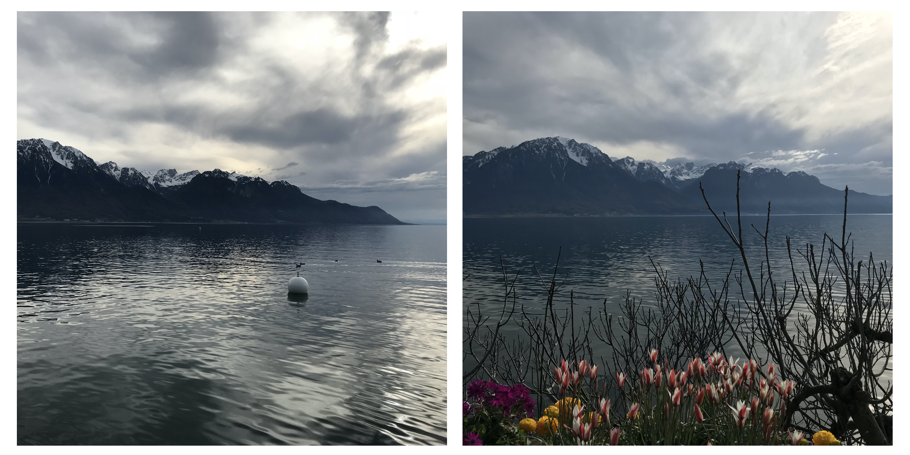
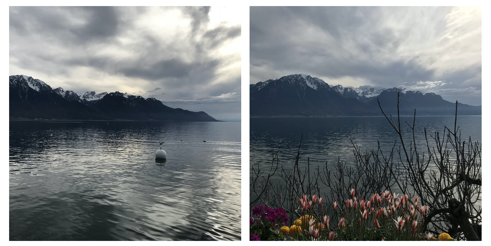
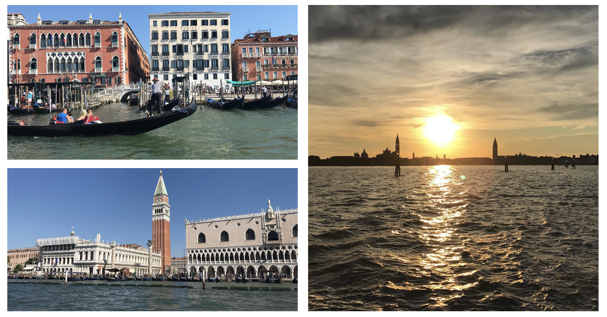
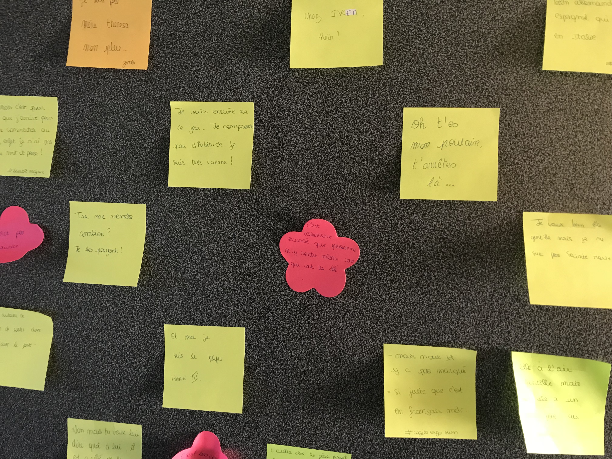
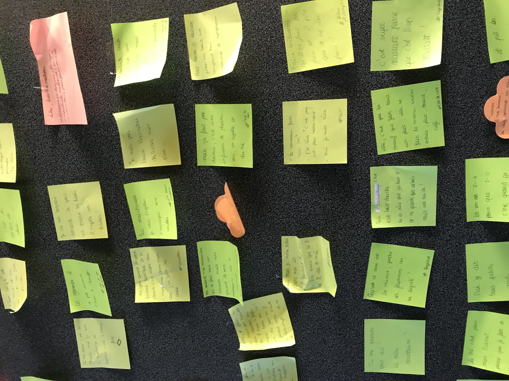

Une petite intro...
Bonjour mes petites perruches, c'est Merclotte, sur cette page vous trouverez des astuces, des vidéos et idées des plus extraordinaires ! Je vais vous partager plusieurs petites expériences pour que le temps passe plus vite.
Bonjour mes petites perruches, c'est Merclotte, sur cette page vous trouverez des astuces, des vidéos et idées des plus extraordinaires ! Je vais vous partager plusieurs petites expériences pour que le temps passe plus vite.
En exclusivité sur cette page, Merclotte cuisinera pour vous les célèbre "unicorn cupcakes" qui déchaîne la toile depuis maintenant quelques année. C'est en me promennant dans un magasin dont je ne citerais pas le nom que j'ai trouvé cette boite coloré pour faire ces fameuses gourmandises.
Liste des ingrédients:
Étape de préparation:
Dernière petite indication pour que tous vos amis apprécient vos cupcakes : éviter le beurre périmé ou autres ingrédients dont vous n'êtes pas sûr qu'ils soient encore consommables.
Le Finistère /fi.nis.tɛʁ/ est un département français situé en région Bretagne. L'Insee et la Poste lui attribuent le code 29. Il tire son nom de sa localisation géographique ; certains évoquent l'abbaye Saint-Mathieu de Fine-Terre dite en latin « Sanctus Mattheus finis terræ » ou « in finibus terræ »
La première photo à été prises au port de Lesconil, la deuxième est une mouette photographiée à la pointe du Raz, et pour finir des galets décorés, une tradition dans ma famille.
Lausanne est une ville sur le lac Léman, dans le canton francophone de Vaud, en Suisse. Elle abrite le siège du Comité international olympique, ainsi que le Musée Olympique et le Parc Olympique.
 

Et pour finir, Venise, capitale de la région de la Vénétie au nord de l'Italie, occupe plus de 100 petites îles dans un lagon de la mer Adriatique. La ville ne comprend aucune route, uniquement des canaux, dont le Grand Canal, bordé de palais gothiques et Renaissance. Au centre, la place Saint-Marc abrite la basilique Saint-Marc, recouverte de mosaïques byzantines, et le campanile de Saint-Marc, avec vue sur les toits rouges de Venise.
"Mon corps est au bout de la frite de la crèpe de la feuille"
"Je suis aussi fraîche qu'une crevette avariée"
"Je suis pas Laure Manodou de la programmation moi !"
"C'est le genre de personne qui t'en fait tout un plat, elle te fait le menu entier: entrée, plat, dessert, café ..."
"Tu me prends pour qui la mère madeleine"
"Il bat le fouet, alors qu'il n'y a rien dans le saladier"
"Il est tourné vers un mur et il essaye d'avancer"
"En ce moment c'est la guerre nucléaire niveau notes!" 
Dans cette rubrique Merclotte vous à fait une petite sélection de vidéos drôles et cocasses.
On commence par avec nos jumelles Marina et Jenyfer de l'émission Tellement vrai
On continue avec un peu de culture gérérale
Et pour finir je vous propose ensuite un humoriste méconu du grand public.